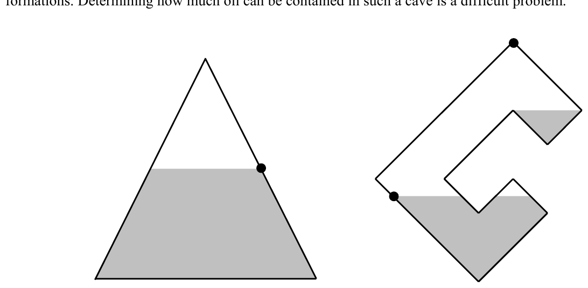

2002 ACM Programming Contest World Finals · Problem F
Prospecting for new sources of oil has become a high-technology industry. With improved drilling technology it has become economically viable to seek out ever smaller and harder to reach deposits of oil. However, using exploratory drilling to locate these deposits is not cost-efficient, so researchers have developed methods to detect oil indirectly.
One such method to detect oil is sonar, which uses reflected sound waves to locate caves in underground rock formations. Determining how much oil can be contained in such a cave is a difficult problem.

In this problem, you will be given some cross-sections of underground caves, represented by polygons such as the ones shown in the figure. Some of the points bounding the polygon may be holes through which oil can seep out into the surrounding rock (represented by black circles in the figure). Given the polygonal shape of the cave and the positions of the holes, you must compute the maximum amount of oil that could be in the cave (shown as gray shaded areas in the figure). This amount is limited by the fact that, in any connected body of oil, the oil level can never be above a hole, since it would drain into the surrounding rock instead.
The input contains several cave descriptions, each in the form of a polygon that specifies a cross-section of a cave. The first line of each description contains a single integer n, representing the number of points on the polygon (3 ≤ n ≤ 100).
Each of the following n lines contains three integers xi, yi, hi. The values (xi, yi) give the positions of the points on the boundary of the polygon in counterclockwise order. The polygon is simple—that is, it does not cross or touch itself. The value of hi is equal to 1 if the point is a hole through which oil can seep out, and 0 otherwise. The “upward” direction in each case is the positive y-axis.
The input is terminated by a zero on a line by itself.
For each cave description, print its sequence number (starting with 1) followed by its oil capacity. Approximate the oil capacity by the area within the given cross-section that may contain oil, rounded to the nearest integer. Use the format in the example output given below.
Place a blank line after each test case.
4 10 0 0 5 10 1 0 20 0 -10 0 0 11 0 6 0 1 5 1 6 0 0 10 4 0 8 6 0 6 4 0 4 6 0 8 10 0 10 8 0 12 10 0 8 14 1 0
Cave 1: Oil capacity = 150 Cave 2: Oil capacity = 27